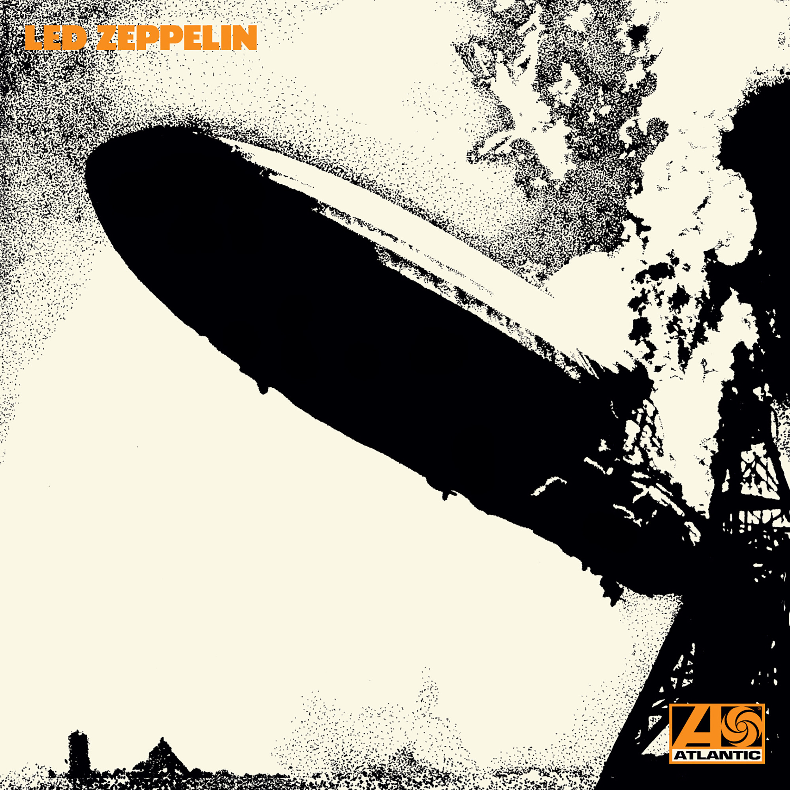
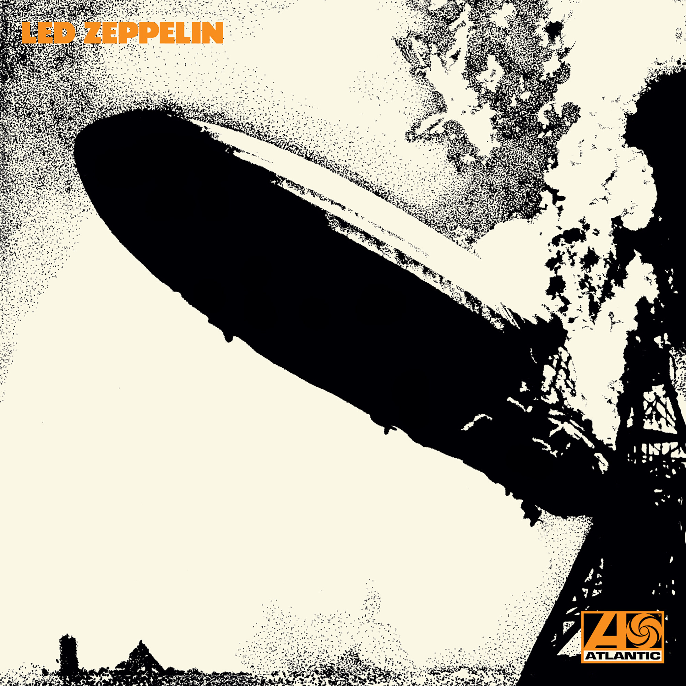
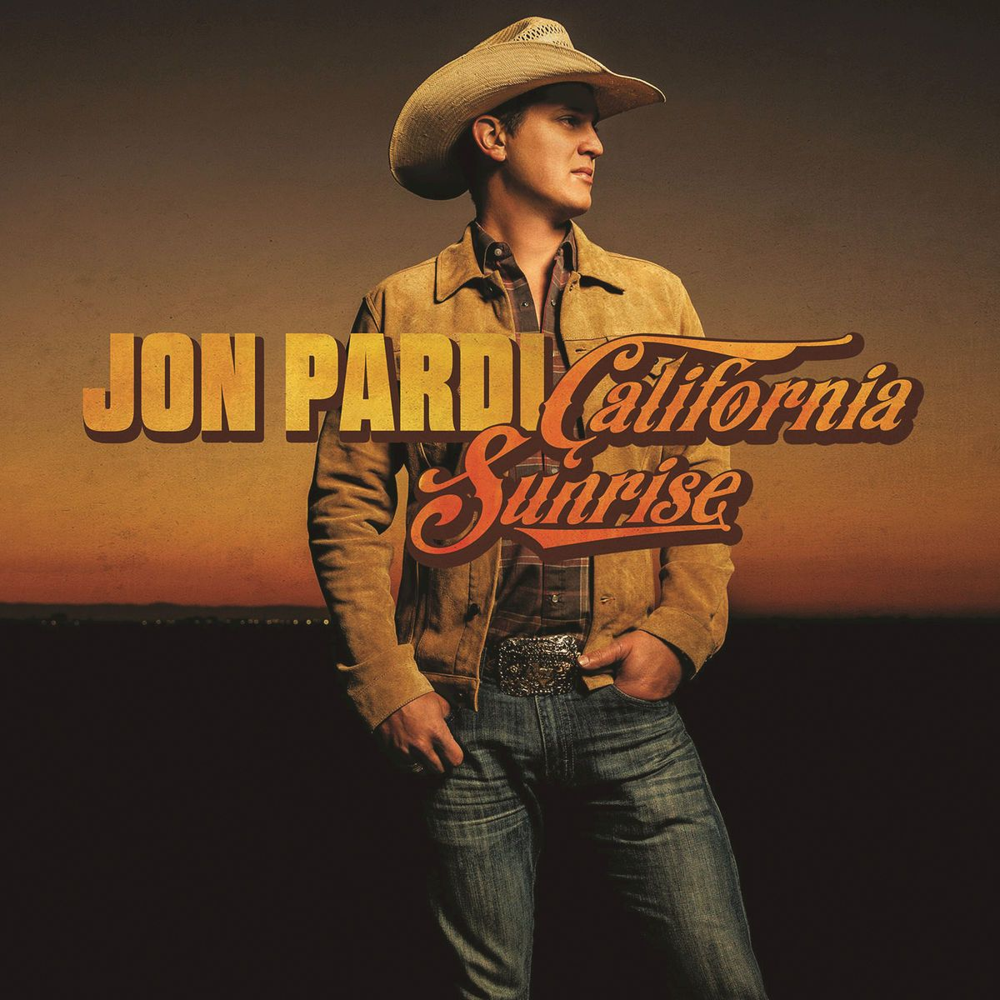
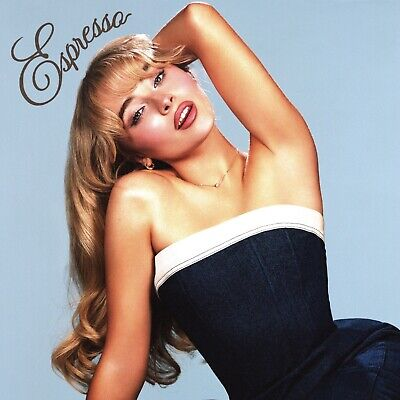
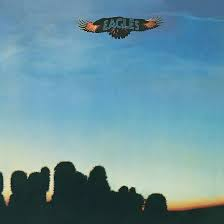
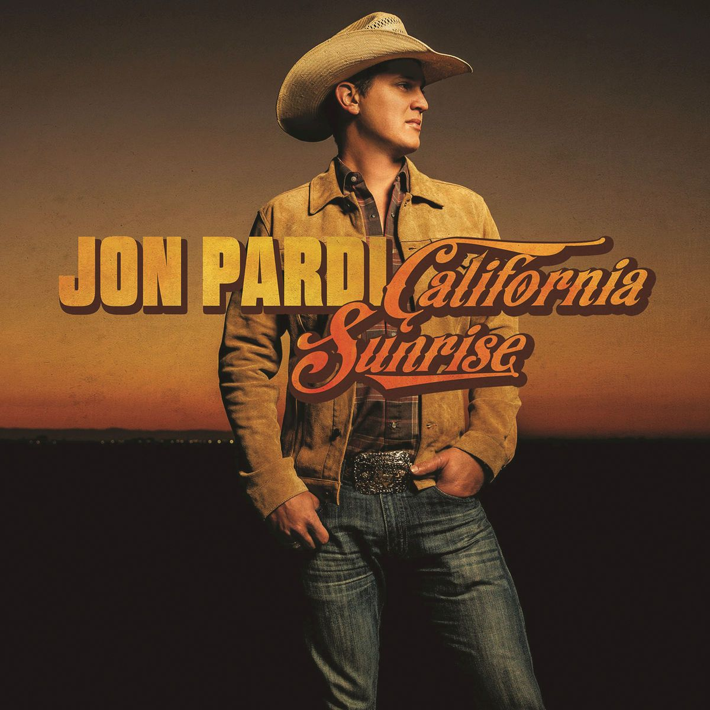
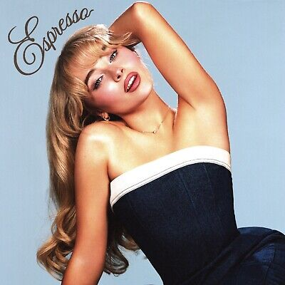
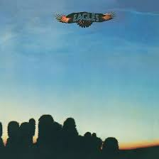

I love dance, golf, music, nature, and so much more!
Irish Dance
I have been Irish dancing since I was 5 years old. I competed in local, state, and national
competitions both solo and as a part of a team. My mother is an immigrant from Ireland, so
I have been dancing to stay connected to that culture.
Here is an example of an Irish dance song!
And here is an image of me and my team at the Western U.S. region Oireachtas, 2023!

Golf
In high school, I was on the girls golf team, and was captain my senior year.
I love to golf with my dad, and we're members of the small country club in our hometown.

Music
I collect vinyl records!
 

 





My favorite types of music:
- Classic Rock
- I love Led Zeppelin, Grateful Dead, and the Eagles.
- Country
- I love Megan Moroney, Jon Pardi, and Zach Top.
- Pop
- I love Taylor Swift, Sabrina Carpenter, and Tate McRae.